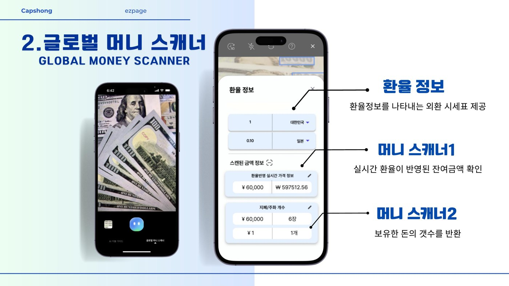

Capstone Design Project · Team Leader
Ezpage
해외 여행자가 현지 물가를 이해하고 정확하게 결제할 수 있도록 돕는 여행 경비 앱으로, 화폐 인식 모델을 기반으로 합니다.

Overview
해외여행 중 익숙하지 않은 지폐와 동전으로 결제할 때 발생하는 불편을 해결하기 위해 기획한 AI 기반 여행 결제 가이드 앱입니다. 화폐 및 메뉴판 이미지를 인식해 현지 금액을 원화로 환산하고, 사용자의 보유 화폐를 바탕으로 결제에 필요한 화폐 조합과 예상 거스름돈을 시각적으로 안내합니다.


Key Contributions
- 서비스 아이디어 기획: 해외여행에서 경험한 현금 결제의 불편을 바탕으로 프로젝트 아이디어를 제안하고, 화폐의 액면가를 인식하는 기능을 넘어 실제 결제 방법을 안내하는 서비스를 기획.
- 팀 리딩 및 MVP 범위 조정: 5인 팀의 팀장·PM으로서 개발 일정과 역할을 조율. 프론트엔드와 백엔드 담당자가 각각 한 명인 상황에서 제한된 기간 내 핵심 기능을 완성할 수 있도록 기능별 우선순위를 정하고 부가 기능의 개발 범위를 조정.
- YOLOv8 기반 화폐 인식 모델 개발: 미국 달러와 일본 엔의 지폐·동전 이미지 데이터를 수집·가공하고, 데이터 증강 및 합성 이미지 생성과 YOLOv8 모델 학습·검증에 참여. 촬영 이미지에서 화폐 종류와 권종을 탐지하고 보유 금액을 계산하는 기능 개발.
- AI 모델 및 서비스 연동: AI 모델 추론 결과를 앱에서 활용할 수 있도록 API 연동을 수행하고, 프론트엔드 개발자의 API 연동 문제 해결을 지원하여 모바일 앱의 기능 통합에 기여.
- 사용자 중심 결제 경험 개선: 화폐를 정확하게 인식하는 것만으로는 실제 결제의 어려움을 해결할 수 없다는 점에 주목. 사용자의 보유 화폐를 기준으로 지불 조합과 예상 거스름돈을 직관적으로 확인할 수 있도록 결제 가이드 기능을 구체화.
Outcome & Learnings
메뉴판 인식, 화폐 스캔, 환율 환산, 지불 가이드 및 여행 경비 관리 기능을 포함한 모바일 앱 프로토타입을 완성했습니다.
프로젝트를 진행하며 높은 모델 성능만으로는 사용자의 문제가 해결되지 않는다는 점을 배웠습니다. 사용자가 필요로 하는 것은 화폐의 액면가 자체보다 실제 결제 상황에서 무엇을 내야 하는지 판단할 수 있는 정보였습니다.
또한 제한된 인력과 일정 속에서 모든 기능을 구현하기보다 핵심 사용자 경험에 집중하고, 개발 과정에서 발생하는 기술적 문제까지 함께 해결하며 서비스를 완성하는 것이 PM의 중요한 역할임을 경험했습니다.